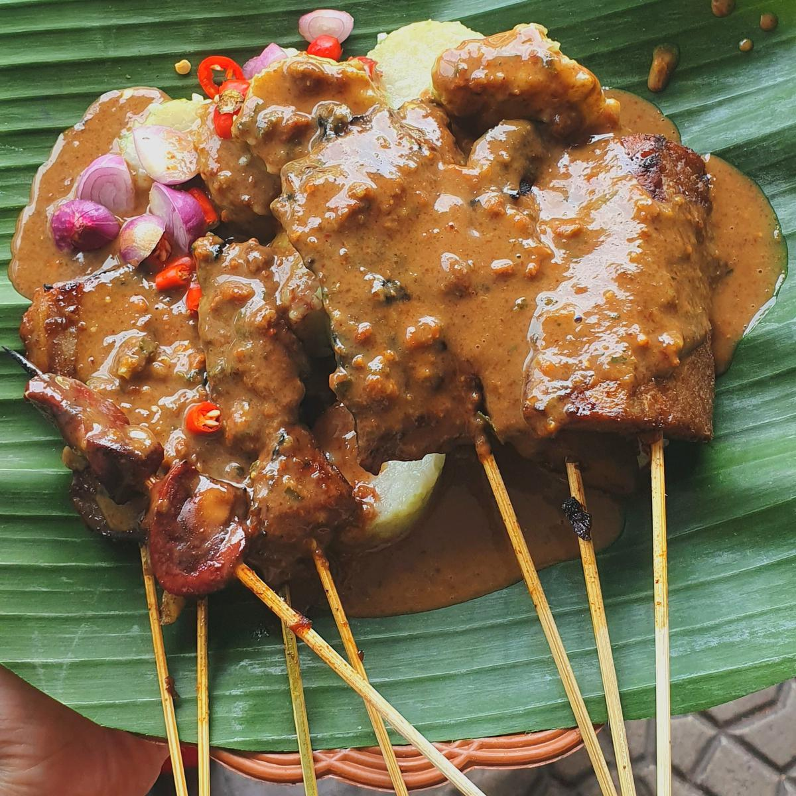
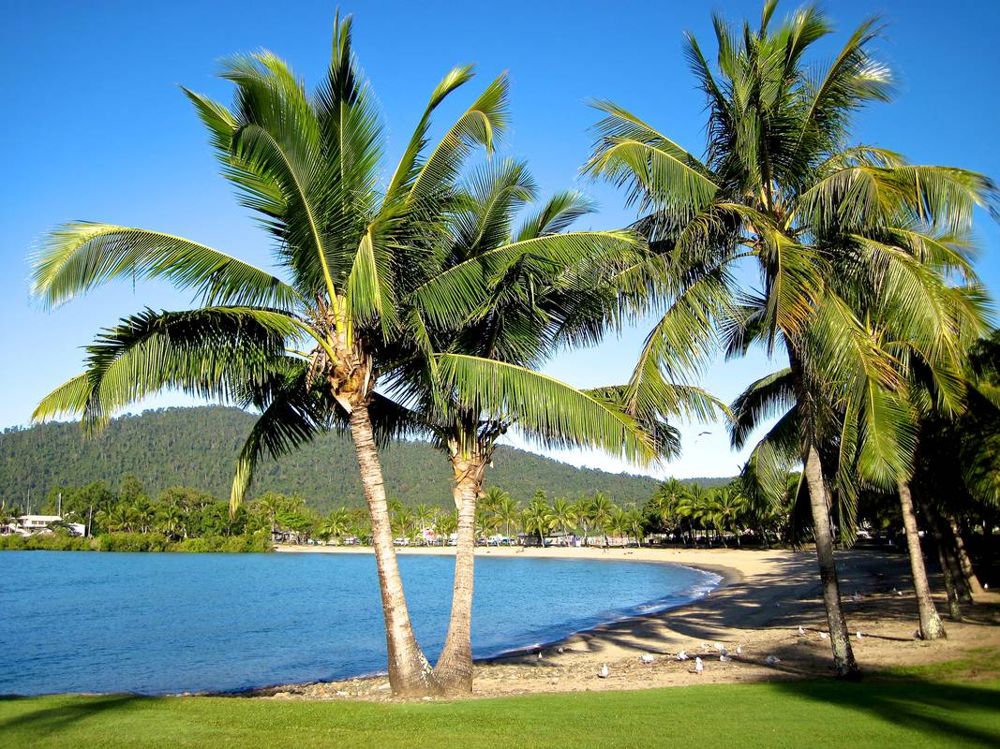

Playing Football
I have many hobbies. However, my favorite hobby is playing soccer. I always take time at least once
a week to play soccer with my friends. We usually rent a gym hourly to play soccer. Why do I like to
play soccer? First, because I enjoy watching soccer. In the past, I was impressed by the playing
ability of Zidane, a Frenchman. Apart from Zidane, I also like Cristiano Ronaldo and Lionel Messi.
Even though I love playing soccer, I have no desire to become a professional soccer player. Making
soccer a hobby is quite enjoyable for me.
Sate

Satay is my favorite food. Sate or satai is a food made from meat that is cut into small pieces and
stabbed in such a way with a stick of coconut or bamboo leaf bone, then grilled using wood charcoal
coals. Satay is served with various spices depending on the variation of the satay recipe.The meat
used for satay includes chicken, goat, lamb, beef, pork, rabbit, horse, and others.
Beach

Now I want to share my story and share my experience about my hobby Traveling I really like to walk
the place I like the most Beaches, why do I like the beach? Because the scenery is very beautiful
can make my mind calm. Usually I go to the beach once a week, for the weekend. The most beautiful
beach I've ever visited is the Teluk Asmara beach in Malang